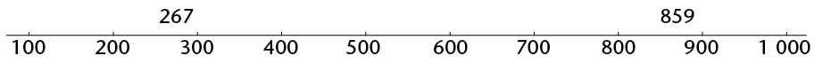

Whole numbers
In this chapter you will learn more about whole numbers, and you will strengthen your skills to do calculations and to solve problems.
Properties of whole numbers
The commutative property of addition and multiplication
- Which of the following calculations would you choose to calculate the number of yellow beads in this pattern? Do not do any calculations now, just make a choice.

- \(7 + 7 + 7 + 7 + 7\)
- \(10 + 10 + 10 + 10 + 10 + 10 + 10\)
- \(5 + 5 + 5 + 5 + 5 + 5 + 5 + 5 + 5 + 5\)
- \(5 + 5 + 5 + 5 + 5 + 5 + 5\)
- \(7 + 7 + 7 + 7 + 7 + 7 + 7 + 7 + 7 + 7\)
- \(10 + 10 + 10 + 10 + 10\)
My choice:
-
- How many red beads are there in the pattern, and how many yellow beads?
- How many beads are there in the pattern in total?
- How many red beads are there in the pattern, and how many yellow beads?
-
- Which expression describes what you did to calculate the total number of beads:
\(70 + 50\) or \(50 + 70\)?
- Does it make a difference?
- Which expression describes what you did to calculate the number of red beads:
\(7 \times 10\) or \(10 \times 7\)?
- Does it make a difference?
- Which expression describes what you did to calculate the total number of beads:
We say: addition and multiplication are commutative. The numbers can be swopped around and their order does not change the answer. This does not work for subtraction and division, however.
- Calculate each of the following:
\(10 \times 8\)
\(12 \times 8\)
\(8 \times 12\)
\(6 \times 8\)
\(3 \times 7\)
\(6 \times 7\)
\(7 \times 6\)
The associative property of addition and multiplication
Lebogang and Nathi both have to calculate \(25 \times 24\).
Lebogang calculates \(25 \times 4\) and then multiplies by 6.
Nathi calculates \(25 \times 6\) and then multiplies by 4.
- Will they get the same answer or not?
If three or more numbers have to be multiplied, it does not matter which two of the numbers are multiplied first.
This is called the associative property of multiplication. We also say multipliaction is associative
- Do the following calculations. Do not use a calculator now.
- \(4 + 7 + 5 + 6\)
- \(7 + 6 + 5 + 4\)
- \(6 + 5 + 7 + 4\)
- \(7 + 5 + 4 + 6\)
- \(4 + 7 + 5 + 6\)
-
- Is addition associative?
- Illustrate your answer with an example.
- Is addition associative?
- Find the value of each expression by working in the easiest possible way.
- \(2 \times 17 \times 5\)
- \(4 \times 7 \times 5\)
- \(75 + 37 + 25\)
- \(60 + 87 + 40 + 13\)
- \(2 \times 17 \times 5\)
- What must you add to each of the following numbers to get 100?
- 82
- 44
- 56
- 78
- 24
- 89
- 77
- 82
- What must you multiply each of these numbers by to get 1 000?
- 250
- 25
- 25
- 500
- 200
- 50
- 250
- Calculate each of the following. Note that you can make the work very easy by being smart in deciding how to group the operations.
- \(82 + 54 + 18 + 46 + 237\)
- \(24 + 89 + 44 + 76 + 56 + 11\)
- \(25 \times (86 \times 4)\)
- \(32 \times 125\)
- \(82 + 54 + 18 + 46 + 237\)
More conventions and the distributive property
The distributive property is a useful property because it allows us to do this:

Both answers are 18. Notice that we have to use brackets in the first example to show that the addition operation must be done first. Otherwise, we would have done the multiplication first. For example, the expression \(3 \times 2 + 4\) means "multiply 3 by 2; then add 4". It does not mean "add 2 and 4; then multiply by 3".
The expression \(4 + 3 \times 2\) also means "multiply 3 by 2; then add 4".
If you wish to specify that addition or subtraction should be done first, that part of the expression should be enclosed in brackets.
The distributive property can be used to break up a difficult multiplication into smaller parts. For example, it can be used to make it easier to calculate \(6 \times 204\):
\(6 \times 204\) can be rewritten as \(6 \times (200 + 4)\) (Remember the brackets!)
\[ \begin{align} &= 6 \times 200 + 6 \times 4 \\ &= 1 200 + 24 \\ &= 1 224 \end{align} \]
Multiplication can also be distributed over subtraction, for example to calculate \(7 \times 96\):
\[ \begin{align} 7 \times 96 &= 7 \times (100 - 4) \\ &= 7 \times 100 - 7 \times 4 \\ &= 700 - 28 \\ &= 672 \end{align} \]
- Here are some calculations with answers. Rewrite them with brackets to make all the answers correct.
- \(8 + 6 \times 5 = 70\)
- \(8 + 6 \times 5 = 38\)
- \(5 + 8 \times 6 - 2 = 52\)
- \(5 + 8 \times 6 - 2 = 76\)
- \(5 + 8 \times 6 - 2 = 51\)
- \(5 + 8 \times 6 - 2 = 37\)
- \(8 + 6 \times 5 = 70\)
- Calculate the following:
- \(100 \times (10 + 7)\)
- \(100 \times 10 + 100 \times 7\)
- \(100 \times (10 - 7)\)
- \(100 \times 10 - 100 \times 7\)
- \(100 \times (10 + 7)\)
- Complete the table.
\(\times\)
8
5
4
9
7
3
6
2
10
11
12
7
3
27
6
9
5
8
6
4
28
2
10
80
110
12
11
- Use the various mathematical conventions for numerical expressions to make these calculations easier. Show all your working.
- \(18 \times 50\)
- \(125 \times 28\)
- \(39 \times 220\)
- \(443 + 2 100 + 557\)
- \(318 + 650 + 322\)
- \(522 + 3 003 + 78\)
- \(18 \times 50\)
Two more properties of number are:
- The additive property of 0: when we add zero to any number, the answer is that number.
- The multiplicative property of 1: when we multiply any number by 1, the answer is that number.
Calculations with whole numbers
Estimating, approximating and rounding
- Try to give answers that you trust to these questions, without doing any calculations with the given numbers.
- Is \(8 \times 117\) more than 2 000 or less than 2 000?
- Is \(27 \times 88\) more than 3 000 or less than 3 000?
- Is \(18 \times 117 \) more than 3 000 or less than 3 000?
- Is \(47 \times 79 \) more than 3 000 or less than 3 000?
- Is \(8 \times 117\) more than 2 000 or less than 2 000?
What you have done when you tried to give answers to questions 1(a) to (d), is called estimation. To estimate is to try to get close to an answer without actually doing the required calculations with the given numbers.
An estimate may also be called an approximation.
- Look at question 1 again.
- The numbers 1 000, 2 000, 3 000, 4 000, 5 000, 6 000, 7 000, 8 000, 9 000 and 10 000 are all multiples of a thousand. In each case, write down the multiple of 1 000 that you think is closest to the answer. Write it next to your answer in question 1. The numbers you write down are called estimates.
- In some cases you may think that you may achieve a better estimate by adding 500 to your estimate, or subtracting 500 from it. If so, you may add or subtract 500.
- If you wish, you may write what you believe is an even better estimate by adding or subtracting some hundreds.
-
- Use a calculator to find the exact answers for the calculations in question 1, or look up the answers in one of the tables below.
The difference between an estimate and the actual answer is called the error.
Calculate the error in your last approximation of each of the answers in question 1.
- What was your smallest error?
- Use a calculator to find the exact answers for the calculations in question 1, or look up the answers in one of the tables below.
- Think again about what you did in question 2. In 2(a) you tried to approximate the answers to the nearest 1 000. In 2(c) you tried to approximate the answers to the nearest 100. Describe what you tried to achieve in question 2(b).
- Estimate the answers for each of the following products and sums. Try to approximate the answers for the products to the nearest thousand, and for the sums to the nearest hundred. Use the first line in each question to do this.
- \(84 \times 178\)
- \(677 + 638\)
- \(124 \times 93\)
- \(885 + 473\)
- \(79 \times 84\)
- \(921 + 367\)
| - \(56 \times 348\)
- \(764 + 829\)
- \(84 \times 178\)
- Use a calculator to find the exact answers for the calculations in question 5, or look up the answers in the tables in question 3. Calculate the error in each of your approximations. Use the second line in each question to do this.
Calculating with "easy" numbers that are close to given numbers is a good way to obtain approximate answers, for example:
- To approximate \(764 + 829\) one may calculate \(800 + 800\) to get the approximate answer 1 600, with an error of 7.
- To approximate \(84 \times 178\) one may calculate \(80 \times 200\) to get the approximate answer 16 000, with an error of 1 048.
- Calculate with "easy" numbers close to the given numbers to produce approximate answers for each product below. Do not use a calculator. When you have made your approximations, look up the precise answers in the table in question 3.
- \(78 \times 46\)
- \(67 \times 88\)
- \(34 \times 276\)
- \(78 \times 178\)
- \(78 \times 46\)
Rounding off and compensating
The word compensate means to do things that will remove damage.
-
- Approximate the answer for \(386 + 3 435\), by rounding both numbers off to the nearest hundred, and adding the rounded numbers.
- Because you rounded 386 up to 400, you introduced an error of 14 in your approximate answer. What error did you introduce by rounding 3 435 down to 3 400?
- What was the combined (total) error introduced by rounding both numbers off before calculating?
- Use your knowledge of the total error to correct your approximate answer, so that you have the correct answer for \(386 + 3 435\).
- Approximate the answer for \(386 + 3 435\), by rounding both numbers off to the nearest hundred, and adding the rounded numbers.
What you have done in question 1 to find the correct answer for \(386 + 3 435\) is called rounding off and compensating. By rounding the numbers off you introduced errors. You then compensated for the errors by making adjustments to your answer.
- Round off and compensate to calculate each of the following accurately:
- \(473 + 638\)
- \(677 + 921\)
- \(473 + 638\)
Subtraction can also be done in this way. For example, to calculate \(\text{R }5 362 - \text{R }2 687\), you may round R2 687 up to R3 000. The calculation can proceed as follows:
- Rounding R2 687 up to R3 000 can be done in two steps: \(2 687 + 13 = 2 700\), and \(2 700 + 300 = 3 000\). In total, 313 is added.
- 313 can now be added to 5 362 too: \(\text{R }5 362 + 313 = 5 675\).
- Instead of calculating \(\text{R }5 362 - \text{R }2 687\), which is a bit difficult, you may calculate \(\text{R }5 675 - \text{R }3 000\). This is easy: \(\text{R }5 675 - \text{R }3 000 = \text{R }2 675\).
This means that \(\text{R }5 362 - \text{R }2 687 = \text{R }2 675\), because
\(\text{R }5 362 - \text{R }2 687 = (\text{R }5 362 + \text{R }313) - (\text{R }2 687 + \text{R }313)\).
Adding numbers in parts written in columns
Numbers can be added by thinking of their parts as we say the numbers. For example, we say 4 994 as four thousand nine hundred and ninety-four. This can be written in expanded notation as 4 000 + 900 + 90 + 4.
Similarly, we can think of 31 837 as \(30 000 + 1 000 + 800 + 30 + 7\).
31 837 + 4 994 can be calculated by working with the various kinds of parts separately. To make this easy, the numbers can be written below each other so that the units are below the units, the tens below the tens and so on, as shown above.
31 837 |
| 4 994 |
|
We write only this: |
In your mind you can see this: |
||||
|
31 837 |
30 000 |
1 000 |
800 |
30 |
7 |
|
4994 |
4 000 |
900 |
90 |
4 |
|
The numbers in each column can be added to get a new set of numbers.
|
31 837 |
30 000 |
1000 |
800 |
30 |
7 |
|
|
4 994 |
4 000 |
900 |
90 |
4 |
||
|
11 |
11 |
|||||
|
120 |
120 |
|||||
|
1 700 |
1 700 |
|||||
|
5 000 |
5 000 |
|||||
|
30 000 |
30 000 |
|||||
|
36 831 |
It is easy to add the new set of numbers to get the answer. |
|||||
The work may start with the 10 000s or any other parts. Starting with the units as shown above makes it possible to do more of the work mentally, and write less, as shown below.
|
31 837 |
|
4 994 |
|
36 831 |
To achieve this, only the units digit 1 of the 11 is written in the first step. The 10 of the 11 is remembered and added to the 30 and 90 of the tens column, to get 130.
We say the 10 is carried from the units column to the tens column. The same is done when the tens parts are added to get 130: only the digit "3" is written (in the tens column, so it means 30), and the 100 is carried to the next step.
- Calculate each of the following without using a calculator:
- \(4 638 + 2 667\)
- \(748 + 7 246\)
- \(4 638 + 2 667\)
- Impilo Enterprises plans a new computerised training facility in their existing building. The training manager has to keep the total expenditure budget under R1 million. This is what she has written so far:
Architects and builders
Painting and carpeting
Security doors and blinds
Data projector
25 new secretary chairs
24 desks for work stations
1 desk for presenter
25 new computers
12 colour laser printers
R102 700
R 42 600
R 52 000
R 4 800
R 50 400
R123 000
R 28 000
R300 000
R 38 980
Work out the total cost of all the items the training manager has budgeted for.
- Calculate each of the following without using a calculator:
- \(7 828 + 6 284\)
- \(7 826 + 888 + 367\)
- \(657 + 32 890 + 6 542\)
- \(6 666 + 3 333 + 1\)
- \(7 828 + 6 284\)
Methods of subtraction
There are many ways to find the difference between two numbers. For example, to find the difference between 267 and 859 one may think of the numbers as they may be written on a number line.

We may think of the distance between 267 and 859 as three steps: from 267 to 300, from 300 to 800, and from 800 to 859. How big are each of these three steps?

The above shows that \(859 - 267 \) is \(33 + 500 + 59\).
- Calculate \(33 + 500 + 59\) to find the answer for \(859 - 267\).
- Calculate each of the following. You may think of working out the distance between the two numbers as shown above, or use any other method you prefer. Do not use a calculator now.
- \(823 - 456\)
- \(1 714 - 829\)
- \(3 045 - 2 572\)
- \(5 131 - 367\)
- \(823 - 456\)
Like addition, subtraction can also be done by working with the different parts in which we say numbers. For example, \(8 764 - 2 352\) can be calculated as follows:
\( \begin{align} 8 \text{ thousand} - 2 \text{ thousand} &= 6 \text{ thousand} \\ 7 \text{ hundred} - 3 \text{ hundred} &= 4 \text{ hundred} \\ 6 \text{ tens} - 5 \text{ tens} &= 1 \text{ ten} \\ 4 \text{ units} - 2 \text{ units} &= 2 \text{ units} \end{align} \)
So, \(8 764 - 2 352 = 6 412\)
Subtraction by parts is more difficult in some cases, for example \(6 213 - 2 758\):
\( \begin{align}6 000 - 2 000 &= 4 000 \text{. This step is easy, but the following steps cause problems:} \\ 200 - 700 &= \ \ ? \\ 10 - 50 &= \ \ ? \\ 3 - 8 &= \ \ ? \end{align} \)
One way to overcome these problems is to work with negative numbers:
\(200 - 700 = (-500) \\ 10 - 50 = (-40) \\ 3 - 8 = (-5) \\ 4000 - 500 \rightarrow 3500 - 45 =\)
Fortunately, the parts and sequence of work may be rearranged to overcome these problems, as shown below:
|
instead of |
we may do |
|
|
\(3 - 8 = \text{ ?}\) |
\(13 - 8 =\)______ |
"borrow" 10 from below |
|
\(10 - 50 = \text{ ?}\) |
\(100 - 50 = \)______ |
"borrow" 100 from below |
|
\(200 - 700 = \text{ ?}\) |
\(1100 - 700 = \)_____ |
"borrow" 1 000 from below |
|
\(6000 - 2000 = \text{ ?}\) |
\(5000 - 2000 = \)______ |
This reasoning can also be set out in columns:
|
instead of |
we may do |
but write only this |
|||||||||||
|
6 000 |
200 |
10 |
3 |
5 000 |
1 100 |
100 |
13 |
6 |
2 |
1 |
3 |
||
|
2 000 |
700 |
50 |
8 |
2 000 |
700 |
50 |
8 |
2 |
7 |
5 |
8 |
||
|
3 000 |
400 |
50 |
5 |
3 |
4 |
5 |
5 |
||||||
-
- Complete the above calculations and find the answer for \(6 213 - 2 758\).
- Use the borrowing technique to calculate \(823 - 376\) and \(6 431 - 4 968\).
- Complete the above calculations and find the answer for \(6 213 - 2 758\).
- Check your answers in question 3(b) by doing addition.
With some practice, you can learn to subtract using borrowing without writing all the steps. It is convenient to work in columns, as shown below for calculating \(6 213 - 2 758\).
6 213 |
| 2 758 |
| 5 |
| 50 |
| 400 |
| 3 000 |
| 3 455 |
In fact, by doing more work mentally, you may learn to save more paper by writing even less as shown below.
| 6 213 |
| 2 758 |
| 3 455 |
Do not use a calculator when you do question 5, because the purpose of this work is for you to come to understand methods of subtraction. What you will learn here will later help you to understand algebra better.
- Calculate each of the following:
- \(7 342 - 3 877\)
- \(8 653 - 1 856\)
- \(5 671 - 4 528\)
- \(7 342 - 3 877\)
-
You may use a calculator to do questions 6 and 7.
Estimate the difference between the two car prices in each case to the nearest R1 000 or closer. Then calculate the difference.- R102 365 and R98 128
- R63 378 and R96 889
- R102 365 and R98 128
- First estimate the answers to the nearest 100 000 or 10 000 or 1 000. Then calculate.
- \(238 769 -141 453\)
- \(856 333 - 739 878\)
- \(65 244 - 39 427\)
- \(238 769 -141 453\)
A method of multiplication
\(7 \times 4 598\) can be calculated in parts, as shown here:
\[ \begin{align} 7 \times 4 000 &= 28 000 \\ 7 \times 500 &= 3 500 \\ 7 \times 90 &= 630 \\ 7 \times 8 &= 56 \end{align} \]
The four partial products can now be added to get the answer, which is 32 186. It is convenient to write the work in vertical columns for units, tens, hundreds and so on, as shown below.
|
4 |
5 |
9 |
8 |
|
|
7 |
||||
|
5 |
6 |
|||
|
6 |
3 |
0 |
||
|
3 |
5 |
0 |
0 |
|
|
2 |
8 |
0 |
0 |
0 |
|
3 |
2 |
1 |
8 |
6 |
The answer can be produced with less writing, by "carrying" parts of the partial answers to the next column, when working from right to left in the columns.
|
4 |
5 |
9 |
8 |
|
|
7 |
||||
|
3 |
2 |
1 |
8 |
6 |
Only the 6 of the product \(7 \times 8\) is written down instead of 56. The 50 is kept in mind, and added to the 630 obtained when \(7 \times 90\) is calculated in the next step.
- Calculate each of the following. Do not use a calculator now.
- \(27 \times 649\)
- \(75 \times 1 756\)
- \(348 \times 93 \)
- \(27 \times 649\)
- Use your calculator to check your answers for question 1. Redo the questions for which you had the wrong answers.
- Calculate each of the following. Do not use a calculator now
- \(67 \times 276\)
- \(84 \times 178\)
- \(67 \times 276\)
- Use a calculator to check your answers for question 3. Redo the questions for which you had the wrong answers.
Long division
- The municipal head gardener wants to buy young trees to plant along the main street of the town. The young trees cost R27 each, and an amount of R9 400 has been budgeted for trees. He needs 324 trees. Do you think he has enough money?
-
- How much will 300 trees cost?
- How much money will be left if 300 trees are bought?
- How much money will be left if 20 more trees are bought?
- How much will 300 trees cost?
The municipal gardener wants to work out exactly how many trees, at R27 each, he can buy with the budgeted amount of R9 400. His thinking and writing are described below.
Step 1
What he writes:
|
27 |
9400 |
What he thinks: I want to find out how many chunks of 27 there are in 9400
Step 2
What he writes:
|
300 |
|
|
27 |
9400 |
|
8100 |
|
|
1300 |
What he thinks: I think there are at least 300 chunks of 27 in 9 400. \(300 \times 27 = 8 100\). I need to know how much is left over.
Step 3 (He has to rub out the one "0" of the 300 on top, to make space.)
What he writes:
|
340 |
|
|
27 |
9400 |
|
8100 |
|
|
1300 |
|
|
1080 |
|
|
220 |
What he thinks: I think there are at least 40 chunks of 27 in 1 300. \(40 \times 27 = 1 080\). I need to know how much is left over. I want to find out how many chunks of 27 there are in 220.Perhaps I can buy some extra trees.
Step 4 (He rubs out another "0".)
What he writes:
|
348 |
|
|
27 |
9400 |
|
8100 |
|
|
1300 |
|
|
1080 |
|
|
220 |
|
|
216 |
|
|
4 |
What he thinks: I think there are at least 8 chunks of 27 in 220. \(8\times 27 = 216\). So, I can buy 348 young trees and will have R4 left.
Do not use a calculator to do questions 3 and 4. The purpose of this work is for you to develop a good understanding of how division can be done. Check all your answers by doing multiplication.
-
- Graham bought 64 goats, all at the same price. He paid R5 440 in total. What was the price for each goat? Your first step can be to work out how much he would have paid if he paid R10 per goat, but you can start with a bigger step if you wish.
- Mary has R2 850 and she wants to buy candles for her sister's wedding reception. The candles cost R48 each. How many candles can she buy?
- Graham bought 64 goats, all at the same price. He paid R5 440 in total. What was the price for each goat? Your first step can be to work out how much he would have paid if he paid R10 per goat, but you can start with a bigger step if you wish.
- Calculate each of the following, without using a calculator:
- \(7 234 \div 48\)
- \(3 267 \div 24\)
- \(9 500 \div 364\)
- \(8 347 \div 24\)
- \(7 234 \div 48\)
Multiples, factors and prime factors
Multiples and factors
If \(n\) is a natural number,6n represents the multiples of 6.
- The numbers 6; 12; 18; 24; ... are multiples of 6.
The numbers 7; 14; 21; 28; ... are multiples of 7.
- What is the 100th number in each sequence above?
- Is 198 a number in the first sequence?
- Is 175 a number in the second sequence?
- What is the 100th number in each sequence above?
Of which numbers is 20 a multiple?
\(20 = 1 \times 20 = 2 \times 10 = 4 \times 5 = 5\times 4 = 10 \times 2 = 20 \times 1\)
20 is a multiple of 1; 2; 4; 5; 10 and 20 and all of these numbers are factors of 20.
Factors come in pairs. The following pairs are factors of 20:

- A rectangle has an area of 30 cm. What are the possible lengths of the sides of the rectangle in centimetres if the lengths of the sides are natural numbers?
- Are 4; 8; 12 and 16 factors of 48? Simon says that all multiples of 4 smaller than 48 are factors of 48. Is he right?
- We have defined factors in terms of the product of two numbers. What happens if we have a product of three or more numbers, for example \( 210 = 2 \times 3 \times 5 \times 7\)?
- Explain why 2; 3; 5 and 7 are factors of 210.
- Are \(2 \times 3\); \(3 \times 5\); \(5 \times 7\); \(2 \times 5\) and \(2 \times 7\) factors of 210?
- Are \(2 \times 3 \times 5\); \(3 \times 5 \times 7\) and \(2 \times 5 \times 7\) factors of 210?
- Explain why 2; 3; 5 and 7 are factors of 210.
- Is 20 a factor of 60? What factors of 20 are also factors of 60?
Prime numbers and composite numbers
The number 36 can be formed as \(2 \times 2 \times 3 \times 3\). Because 2 and 3 are used twice, they are called repeated factors of 36.
- Express each of the following numbers as a product of as many factors as possible, including repeated factors. Do not use 1 as a factor.
- 66
- 67
- 68
- 69
- 70
- 71
- 72
- 73
- 66
- Which of the numbers in question 1 cannot be expressed as a product of two whole numbers, except as the product \(1\times\) the number itself?
A number that cannot be expressed as a product of two whole numbers, except as the product \(1\times\) the number itself, is called a prime number.
- Which of the numbers in question 1 are prime?
Composite numbers are natural numbers with more than two different factors. The sequence of composite numbers is 4; 6; 8; 9; 10; 12; ...
- Are the statements below true or false? If you answer "false", explain why.
- All prime numbers are odd numbers.
- All composite numbers are even numbers.
- 1 is a prime number.
- If a natural number is not prime, then it is composite.
- 2 is a composite number.
- 785 is a prime number.
- A prime number can only end in 1; 3; 7 or 9.
- Every composite number is divisible by at least one prime number.
- All prime numbers are odd numbers.
- We can find out whether a given number is prime by systematically checking whether the primes 2; 3; 5; 7; 11; 13; . . . are factors of the given number or not.
To find possible factors of 131, we need to consider only the primes 2; 3; 5; 7 and 11. Why not 13; 17; 19; . . .?
- Determine whether the following numbers are prime or composite. If the number is composite, write down at least two factors of the number (besides 1 and the number itself).
- 221
- 713
- 221
Prime factorisation
To find all the factors of a number you can write the number as the product of prime factors, first by writing it as the product of two convenient (composite) factors and then by splitting these factors into smaller factors until all factors are prime. Then you take all the possible combinations of the products of the prime factors.
Every composite number can be expressed as the product of prime factors and this can happen in only one way.
Example: Find the factors of 84.
Write 84 as the product of prime factors by starting with different known factors:
\[ \begin{align} 84 &= 4 \times 21 \\ &= 2 \times 2 \times 3 \times 7 \end{align} \]
or
\[ \begin{align} 84 &= 7 \times 12 \\ &= 7 \times 3 \times 4 \\ &=7 \times 3 \times 2 \times 2 \end{align} \]
or
\[ \begin{align} 84 &= 2 \times 42 \\ &= 2 \times 6 \times 7 \\ &=2 \times 2 \times 3 \times 7 \end{align} \]
A more systematic way of finding the prime factors of a number would be to start with the prime numbers and try the consecutive prime numbers 2; 3; 5; 7; ... as possible factors. The work may be set out as shown below.
| 2 | 1 430 |
| 5 | 715 |
| 11 | 143 |
| 13 | 13 |
| 1 |
\[ 1 430 = 2 \times 5 \times 11 \times 13 \]
| 3 | 2 457 |
| 3 | 819 |
| 3 | 273 |
| 7 | 91 |
| 13 | 13 |
| 1 |
\[2 457 = 3 \times 3 \times 3 \times 7 \times 13 \]
We can use exponents to write the products of prime factors more compactly as products of powers of prime factors.
\[ \begin{align} 2 457 &= 3 \times 3 \times 3 \times 7 \times 13 &&= 3^3 \times 7 \times 13 \\ 72 &= 2 \times 2 \times 2 \times 3 \times 3 &&= 2^3 \times 3^2 \\ 1 500 &= 2 \times 2 \times 3 \times 5 \times 5 \times 5 &&= 2^2 \times 3 \times 5^3 \end{align} \]
- Express the following numbers as the product of powers of primes:
- 792 =
- 444 =
- 792 =
- Find the prime factors of the numbers below.
2 28 32 124 36 42 345 182 14
Common multiples and factors
- Is \(4 \times 5\) a multiple of 4?
Is \(4 \times 5\) a multiple of 5?
- Comment on the following statement: The product of numbers is a multiple of each of the numbers in the product.
We use common multiples when fractions with different denominators are added.
To add \( \frac{2}{3} + \frac{3}{4} \) the common denominator is \(3 \times 4\), so the sum becomes \( \frac{8}{12} + \frac{9}{12} \)
In the same way, we could use \(6 \times 8 = 48\) as a common denominator to add \( \frac{1}{6} + \frac{3}{8}\), but 24 is the lowest common multiple (LCM) of 6 and 8.
Prime factorisation makes it easy to find the lowest common multiple or highest common factor.When we simplify a fraction, we divide the same number into the numerator and the denominator. For the simplest fraction, use the highest common factor (HCF) to divide into both numerator and denominator.
The HCF is divided into the numerator and the denominator to write the fraction in its simplest form.
So \( \frac{36}{144} = \frac{2 \times 2 \times 3 \times 3}{2 \times 2 \times 2 \times 2 \times 3 \times 3} = \frac{1}{4} \)
Use prime factorisation to determine the LCM and HCF of 32, 48 and 84 in a systematic way:
\[ \begin{align} 32 &= 2 \times 2 \times 2 \times 2 \times 2 &&= 2^5 \\ 48 &= 2 \times 2 \times 2 \times 2 \times 3 &&= 2^4 \times 3 \\ 84 &= 2 \times 2 \times 3 \times 7 &&= 2^2 \times 3 \times 7 \end{align} \]
The LCM is a multiple, so all of the factors of all the numbers must divide into it.
All of the factors that are present in the three numbers must also be factors of the LCM, even if it is a factor of only one of the numbers. But because it has to be the lowest common multiple, no unnecessary factors are in the LCM.
The highest power of each factor is in the LCM, because then all of the other factors can divide into it. In 32, 48 and 84, the highest power of 2 is \(2^5\), the highest power of 3 is 3 and the highest power of 7 is 7.
LCM = \(2^5 \times 3 \times 7 = 672\)
The HCF is a common factor. Therefore, for a factor to be in the HCF, it must be a factor of all of the numbers. 2 is the only number that appears as a factor of all three numbers. The lowest power of 2 is \(2^2\), so the HCF is \(2^2\).
- Determine the LCM and the HCF of the numbers in each case.
- 24; 28; 42
- 17; 21; 35
- 75; 120; 200
- 18; 30; 45
- 24; 28; 42
Investigate prime numbers
You may use a calculator for this investigation.
- Find all the prime numbers between 110 and 130.
- Find all the prime numbers between 210 and 230.
- Find the biggest prime number smaller than 1 000.
Solving problems
Rate and ratio
You may use a calculator for the work in this section.
- Tree plantations in the Western Cape are to be cut down in favour of natural vegetation. There are roughly 3 000 000 trees on plantations in the area and it is possible to cut them down at a rate of 15 000 trees per day with the labour available. How many working days will it take before all the trees will be cut down?
Instead of saying " . . . per day", people often say "at a rate of " . . . per day". Speed is a way to describe the rate of movement.
The word per is often used to describe a rate and can mean for every, for, in each, in, out of, or every.
- A car travels a distance of 180 km in 2 hours on a straight road. How many kilometres can it travel in 3 hours at the same speed?
- Thobeka wants to order a book that costs $56,67. The rand-dollar exchange rate is R7,90 to a dollar. What is the price of the book in rands?
- In pattern A below, there are 5 red beads for every 4 yellow beads.

Describe patterns B and C in the same way.
- Complete the table to show how many screws are produced by two machines in different periods of time.
Number of hours
1
2
3
5
8
Number of screws at machine A
1 800
Number of screws at machine B
2 700
- How much faster is machine B than machine A?
- How many screws will machine B produce in the same time that it takes machine A to make 100 screws?
- How much faster is machine B than machine A?
The patterns in question 4 can be described like this: In pattern A, the ratio of yellow beads to red beads is 4 to 5. This is written as 4 : 5. In pattern B, the ratio between yellow beads and red beads is 3 : 6. In pattern C the ratio is 2 : 7.
In question 5, machine A produces 2 screws for every 3 screws that machine B produces. This can be described by saying that the ratio between the production speeds of machines A and B is 2 : 3.
- Nathi, Paul and Tim worked in Mr Setati's garden. Nathi worked for 5 hours, Paul for 4 hours and Tim for 3 hours. Mr Setati gave the boys R600,for their work. How should they divide the R600 among the three of them?
We use ratios to show how many times more, or less, one quantity is than another.
A ratio is a comparison of two (or more) quantities.
The number of hours that Nathi, Paul and Tim worked are in the ratio 5 : 4 : 3. To be fair, the money should also be shared in that ratio. That means that Nathi should receive 5 parts, Paul 4 parts and Tim 3 parts of the money. There were 12 parts, which means Nathi should receive \( \frac{5}{12} \) of the total amount, Paul should get \( \frac{4}{12}\) and Tim should get \( \frac{3}{12} \).
- Ntabi uses 3 packets of jelly to make a pudding for 8 people. How many packets ofjelly does she need to make a pudding for 16 people? And for 12 people?
- Which rectangle is more like a square: a \(3 \times 5\) rectangle or a \(6 \times 8\) rectangle? Explain.
Remember that if you multiply by 1, the number does not change. If you multiply by a number greater than 1, the number increases. If you multiply by a number smaller than 1, the number decreases.
To increase 40 in the ratio 2 : 3 means that the 40 represents two parts and must be increased so that the new number represents 3 parts. If 40 represents two parts, 20 represents 1 part. The increased number will therefore be \(20 \times 3 = 60\).
-
- Increase 56 in the ratio 2 : 3.
- Decrease 72 in the ratio 4 : 3.
- Increase 56 in the ratio 2 : 3.
-
- Divide 840 in the ratio 3 : 4.
- Divide 360 in the ratio 1 : 2 : 3.
- Divide 840 in the ratio 3 : 4.
- Some data about the performance of different athletes during a walking event is given below. Investigate the data to find out who walks fastest and who walks slowest. Arrange the athletes from the fastest walker to the slowest walker.
- First make estimates to do the investigation.
- Then use your calculator to do the investigation.
Athlete
A
B
C
D
E
F
Distance walked in m
2 480
4 283
3 729
6 209
3 112
5 638
Time taken in minutes
17
43
28
53
24
45
Profit, loss, discount and interest
-
- How much is 1 eighth of R800?
- How much is 1 hundredth of R800?
- How much is 7 hundredths of R800?
- How much is 1 eighth of R800?
Rashid is a furniture dealer. He buys a couch for R2 420. He displays the couch in his showroom with the price marked as R3 200. Rashid offers a discount of R320 to customers who pay cash.
The amount for which a dealer buys an article from a producer or manufacturer is called the cost price. The price marked on the article is called the marked price and the price of the article after discount is the selling price.
-
- What is the cost price of the couch in Rashid's furniture shop?
- What is the marked price?
- What is the selling price for a customer who pays cash?
- How much is 10 hundredths of R3 200?
- What is the cost price of the couch in Rashid's furniture shop?
The discount on an article is always less than the marked price of the article. In fact, it is only a fraction of the marked price. The discount of R320 that Rashid offers on the couch is 10 hundredths of the marked price.
Another word for hundredths is percentage, and the symbol for percentage is %. So we can say that Rashid offers a discount of 10%.
A percentage is a number of hundredths.
18% is 18 hundredths, and 25% is 25 hundredths.
%is a symbol for hundredths. 8% means 8 hundredths and 15% means 15 hundredths.
The symbol % is just a variation of the \( \frac{}{100} \) that is used in the common fraction notation for hundredths.
8% is \( \frac{8}{100} \).
A discount of 6% on an article can be calculated in two steps:
Step 1: Calculate 1 hundredth of the marked price (divide by 100).
Step 2: Calculate 6 hundredths of the marked price (multiply by 6).
- Calculate a discount of 6% on each of the following marked prices of articles:
- R3 600
- R9 360
- R3 600
-
- How much is 1 hundredth of R700?
- A customer pays cash for a coat marked at R700. He is given R63 discount. How many hundredths of R700 is this?
- What is the percentage discount?
- How much is 1 hundredth of R700?
- A client buys a blouse marked at R300 and she is given R36 discount for paying cash. Work as in question 4 to determine what percentage discount she was given.
You may use a calculator to do questions 6, 7 and 8.
- A dealer buys an article for R7 500 and makes the price 30% higher. The article is sold at a 20% discount.
- What is the selling price of the article?
- What is the dealer's percentage profit?
- What is the selling price of the article?
When a person borrows money from a bank or some other institution, he or she normally has to pay for the use of the money. This is called interest.
- Sam borrows R7 000 from a bank at 14% interest for one year. How much does he have to pay back to the bank at the end of the period?
- Jabu invests R5 600 for one year at 8% interest.
- What will the value of his investment be at the end of that year?
- At the end of the year Jabu does not withdraw the investment or the interest earned, but reinvests it for another year. How much will it be worth at the end of the second year?
- What will the value of Jabu's investment be after five years?
- What will the value of his investment be at the end of that year?